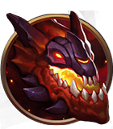
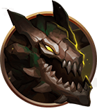
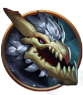
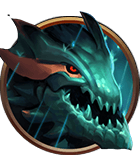

Considerado por muitos como o melhor
dragão do jogo, o Infernal aumenta em 10/17/24% os status de dano de ataque e de poder de habilidade de toda a equipe, ou seja, é um dragão que aumenta seu pico de poder e a capacidade de abater inimigos nas lutas.

Dragão da Montanha
Um dos
dragões preferidos dos profissionais e de jogadores com nível alto, o Dragão da Montanha concede um aumento de 16/23/30% de dano contra monstros épicos e torres, ou seja, é perfeito para composições que querem acabar o jogo de forma
rápida, pois aumenta sua capacidade de dano nas torres e em objetivos, como o Barão.

Dragão das Nuvens
Comparado com os outros dragões,
o Dragão das Nuvens talvez seja o menos importante. Chamado também como Dragão dos Ventos, ele concede 3/4,5/6% de velocidade de movimento, triplicada fora de combate.

Dragão do Oceano
O Dragão do Oceano concede 6/9/12% de restauração de mana e de vida a cada cinco segundos, mas desde que o campeão não sofra nenhum ataque por oito segundos e é ótimo para composições de poke, fazendo com que sua mana e sua
vida sejam restauradas aos poucos enquanto você causa dano sem se expor.

Dragão Ancião
Considerado o maior dos dragões no LoL, o Dragão Ancião surge após os 35 minutos de jogo e é um dos objetivos mais importantes, assim como o Barão – isso tudo em função dos seus benefícios. O Ancião amplifica todos os buffs
conquistados pela sua equipe nos dragões anteriores por dois minutos e meio.